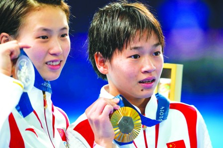
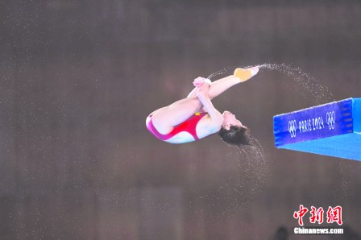

在巴黎奥运跳水女子10公尺台决赛中，东京奥运冠军得主全红婵成功卫冕，陈芋汐获得亚军。图为全红婵和陈芋汐相拥展示奖牌。（美联社）

全红婵在比赛中的美姿。（中新网）
东京奥运金牌得主中国队的全红婵，昨晚（6日）在巴黎奥运女子10米跳台决赛以425.60分卫冕，亚军是其女子双人10米跳台夺金拍档及仅输4.9分的陈芋汐。至此中国跳水队已在5项比赛囊括5金，亦是国家队的今届第22金。(芧B专页刊A6)
17岁的全红婵在女子10米跳台决赛的最大对手是队友18岁的陈芋汐，惟前者首跳即取得90.00分，以7.5分领前陈芋汐，全红婵次跳后积分领前优势增至13.9分，但在第3跳失准只得76.80分，被得89.10分的陈芋汐追至只落后1.60分，形势相当紧凑。
及至关键的第4跳，全红婵顶住压力豪取整晚最高的92.40分，令陈芋汐被甩开至4.90分，而在末轮两人同得81.60分下，以425.60分冲刺的全红婵终蝉联冠军，而陈芋汐则继去年的杭州亚运后，再次在国际大赛屈居对方之下，铜牌得主是得372.10分的朝鲜队金美莱。
全红婵确认夺冠后与教练陈若琳相拥而泣，及后到颁奖台时又与陈芋汐拥抱。
她称这场决赛因观众呐喊而弄得有点紧张，之后尽量自我调整和专注做好自己，并说：「很开心、很骄傲为中国队赢得这枚金牌。」另据中国传媒报道，自东奥以来，全红婵和陈芋汐在国内、国际大赛的女子10米跳台决赛中同场共对赛16次，冠、亚军从未落在他人手中。
另外，中国国家队的30岁女子铁饼选手冯彬，昨晨在决赛与克罗地亚队的伊卡丝域同掷出67.51米，但因其6轮中3次投出67米以上较对手为佳而收获银牌，并是她三度征战奥运的个人首面奖牌，金牌得主是做出69.50米的美国队选手柯雯。